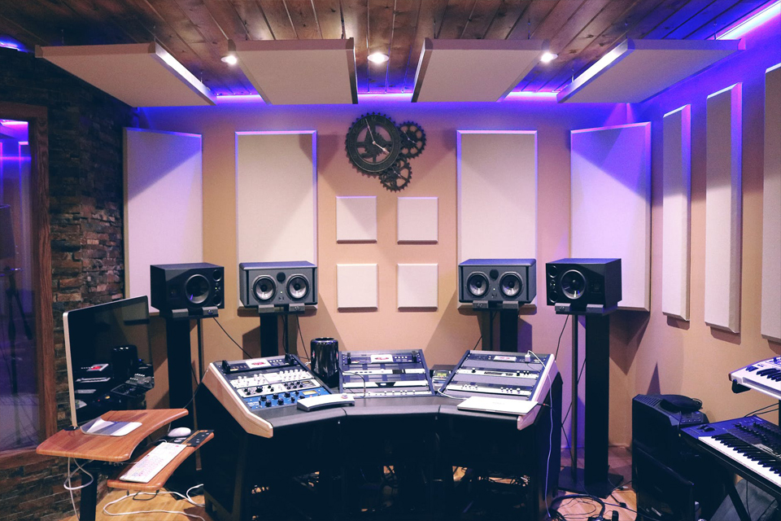
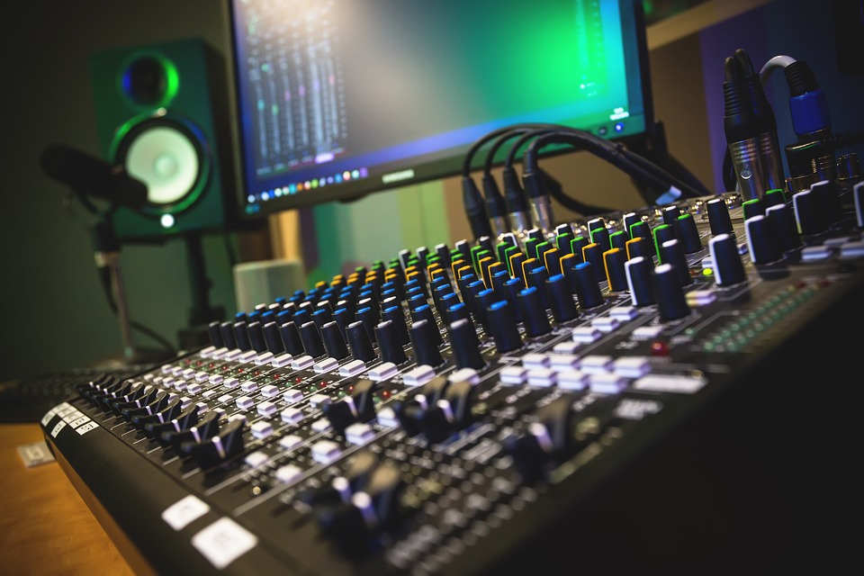

Naeriix Studio dispone de dos salas de grabacion perfectamente constuidas por arquitectos altamente capacitados.
Este estudio fue diseñado por el arquitecto Andres Ramirez, cuenta con una sala de control incluida en la room de grabacion, la cual fue tratada acusticamente por Martin Gross.
En este estudio el artista puede encontrar diferentes instrumentos y equipo como: bateria, piano,guitarras, bajos, amplificadores y monitores de alta calidad.
El artista podra contar con una sala de estar perfectamente decorada por Alicia Mullen la cual incluye: sillones, tv, metegol, consolas de videojuegos, todo perfectamente pensado para una completa distension y relax de los musicos.
este estudio cuenta con una consola ASLL-K 440 TI del año 1980, tambien cuenta con un monitoreo GCI perfectamente diseñado para nuestra sala de grabacion con un Compresor ach de Line 6, todo nuestro equipamento esta pensado para una masterizacion y una calidad de sonido optima para los musicos
El estudio de grabacion B cuenta con una sala de grabacion con baterias, bajos,guitarras, amplificadores y monitores Bust Laney y un sistema de microfonos Shure, la room de control cuenta con una CONSOLA API de 32 canales de grabación x 64 canales de mezcla la cual esta seteada por nuestro nuestro tecnico de sonido Aurelio Narvaez. contamos con un COMPRESOR UREI 1176 este estudio esta perfectamente diseñado y enfocado para una produccion mucho mas profecional para aquellos artistas que quieran llevar su sonido un poco mas alla...